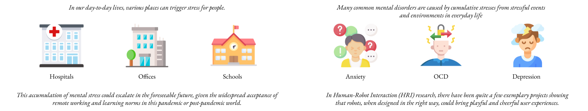
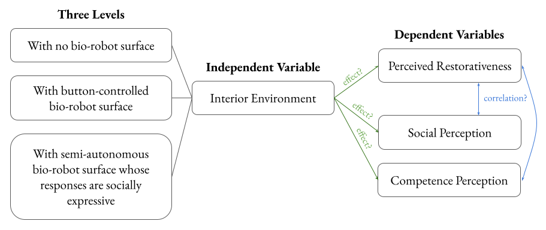
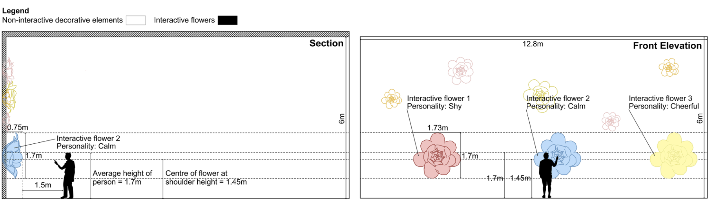
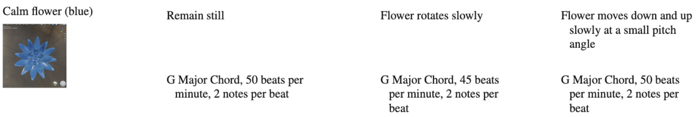
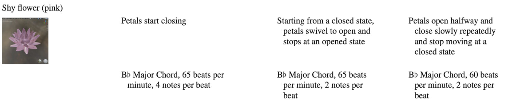
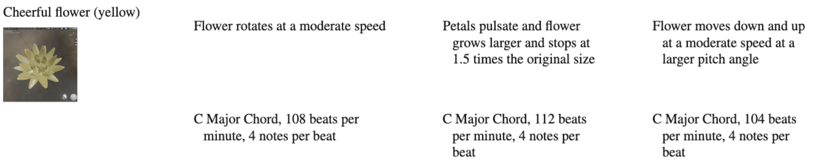
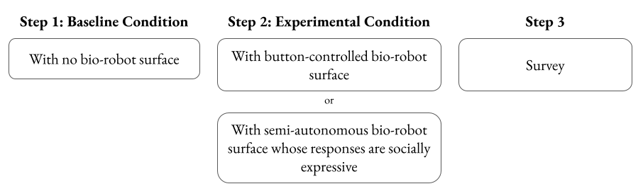
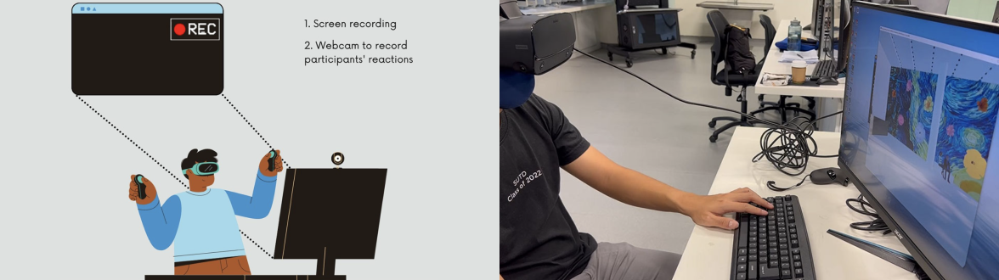
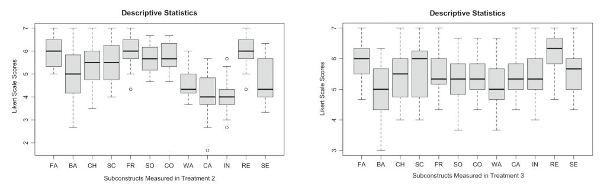
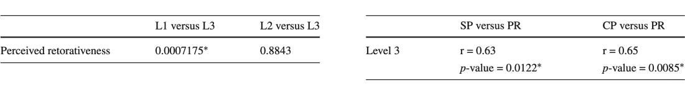

Project
Restorative Environments
Can socially-interactive architectural components shape our daily lives? 🧐
Categories
Architecture | Research | Making

Organisation
Undergraduate Research Opportunites (UROP)
Role
Co-investigator
Other Researchers
· Asst. Professor Wang Yixiao (PI, Advisor)
· Arturo Castillo Ugalde (EPD Ph.D., collaborated with for the research and fabrication of the physical prototype)
Other Collaborators
· Formaxioms Lab (SUTD)
· Asst. Professor Carlos Aguiar (UIUC)
· Assoc. Professor Yow Wei Quin (SUTD)
· Asst. Professor Simon Perrault (SUTD)
Duration
Sep 2021 - Aug 2023
Abstract
In a pandemic or post-pandemic world, numerous environments can be stress-inducing for individuals. Hospitals, for instance,can trigger anxiety in patients who feel a sense of helplessness over their health conditions. Similarly, home offices, where people spend extended hours meeting deadlines in isolation, can also contribute to mounting mental pressure. The situation may further deteriorate in the foreseeable future, given the widely accepted work-from-home norms that leads to a rise in social isolation. Could social robotics play a positive role in transforming these stressful places into cheerful and restorative places? In this paper, we investigated how people’s perceived restorativeness (i.e., how restorative an environment is perceived by its inhabitants) can be shaped by socially interactive robotic flowers embedded in the interior spaces as interior decorations. As a means of simulating the interior environment, we utilized virtual reality (VR) to incorporate socially expressive virtual flowers, enabling people to interact with them. Through in-lab studies, we invited 35 participants to experience this virtual space, both with and without the socially interactive flowers. Our findings revealed that the presence of these interactive flowers significantly enhanced participants’ perception of restorativeness within the interior environment. While previous research in Social Robotics and Human-Robot Interaction (HRI) has primarily focused on people’s perception of social robots, there has been limited exploration into how social robots, when integrated into an architectural space, can influence inhabitants’ perceptions of that particular environment. We believe this can be a novel and promising research direction for the social robotics and HRI communities.
This project is supported by the SGP Healthcare Thrust Grant (SGD $230,450) under the project “Creating Restorative Environments through Socially Interactive Architectural Robotics” and culminated in a publication on International Journal of Social Robotics in August 2023.
Authors
Sharmayne Lim Zhiyu · Hong Pin Koh (Research Assistant)* · Carlos Aguiar* · Jacob Chen Shihang (Formaxioms Lab)* · Yixiao Wang
*Hong Pin Koh, Carlos Aguiar and Jacob Chen Shihang have contributed equally to this work.
Outline
Research Motivation · Related Works · Methodology · Interaction Design · Study Procedure · Results · Conclusion · Contributions · Future Works
Research Motivation
Related Works
This section encompasses a comprehensive exploration of six bodies of literature. Firstly, we review the literature on “Architectural Robotics and Human Building Interaction (HBI),” examining interactive, architectural spaces that incorporate robotics and computational technologies. Next, we delve into the realm of “Socially Interactive Robotic Environment,” focusing on the literature of socially interactive robotic furnishings and other architectural components that facilitate social interactions. Moving on, we explore “Playful Robots in HRI and Social Robotics,” presenting noteworthy design exemplars of playful social robots in the fields of HRI and Social Robotics. Subsequently, we discuss the diverse aspects of “Designing Social Robot Behaviors,” encompassing personality types and output modalities of social robots, including visual, auditory, and haptic channels such as light, gestures, sound, and touch. Shifting our focus, we investigate the “Design of Restorative Spaces,” analyzing key literature in architectural and interior design that fosters relaxation and stress reduction in various environments. Lastly, we delve into “Emotional Architecture,” examining the significance of architectural elements in creating emotional connections between individuals and the spaces they inhabit. Read more about related works here.Methodology
In this section, we will focus on (1) the validity of using VR as a research tool for HRI studies, (2) the research design of our user studies investigating participants’ perceived restorativeness, and (3) the employment of “Thematic Analysis” in our qualitative data analysis.Validity of VR as a Research Tool in HRI
In recent years, an increasing number of studies in Human-Robot Interaction (HRI) have been conducted using Virtual Reality. Consequently, the validity of employing VR to simulate HRI processes has also come under scrutiny. To the best of our knowledge, VR has generally been regarded as a valid research tool for HRI, particularly in the realm of social robotics. Nonetheless, there are some mixed results from studies comparing VR study outcomes with those of physical, in-lab studies. For instance, VR is considered "a valid platform for testing social interaction between people and non-humanoid robots". However, there are also studies that suggest inconclusively that people's responses to VR-simulated robots may differ from their responses to real-world robots. Nevertheless, there are several advantages to utilizing VR for simulating HRI in research. For example, VR enables fast, flexible, and iterative design processes. It can reproduce complex scenarios that are challenging to replicate in reality and provide participants with realistic and immersive environments. In our study, our primary objective is to investigate people's perceptions of space and environments. VR has proven to be exceptionally well-suited for this purpose due to its ability to simulate lifelike and immersive environmental experiences. Furthermore, given the novelty of our research topic, which focuses on how HRI influences people's perceived restorativeness, creating a full-scale physical robotic space would be impractical for the initial exploration of such a novel idea. Therefore, the advantages of using VR as our research tool in this project outweigh its limitations.Research Design
Research Questions: There are three Research Questions we are trying to investigate:
Q1: Can socially interactive architectural robotics, when designed properly, increase inhabitants’ perceived restorativeness of the environment, and why?
Q2: What are the relationships between inhabitants’ social perception of architectural robotics and their perceived restorativeness of the environment?
Q3: What are the relationships between inhabitants’ competency perception of socially interactive architectural robotics and their perceived restorativeness of the environment?
Hypotheses: From these three questions, we have made three key hypotheses:
H1: The socially interactive robotic flowers, when embedded in an interior space, can increase inhabitants’ perceived restorativeness of the interior environment.
H2: Inhabitants’ social perception of the interactive robotic flowers is positively correlated with their perceived restorativeness of the interior environment.
H3: Inhabitants’ competency perception of the interactive robotic flowers is positively correlated with their perceived restorativeness of the interior environment.

Independent Variable: The independent variable we are manipulating is the virtual environment where human-flower interaction happens:
Level 1 (baseline condition): a virtual interior space with some static flower decorations on the wall (these flower decorations are not interactive).
Level 2 (test condition 1): a virtual interior space with button-controlled, interactive flower decorations on the wall (more specifically, these flowers are button-controlled by the users or participants).
Level 3 (test condition 2): a virtual interior space with socially interactive flower decorations (e.g., the flower could proactively engage users and respond to verbal communications) on the wall. This is achieved through the Wizard of Oz (WoZ) technique where interactive systems are teleoperated by experimenters to simulate intelligent or other complex interactions for participants.
Perceived Restorativness: To what extent do inhabitants of an environment perceive the environment as restorative. Measured by the PRS-11 scale, which is a validated scale measuring the scores of four subconstructs including “being away,” “fascination,” “coherence,” and “scope.”
Social Perception: To what extent do users perceive a robot they interact with as socially expressive. Measured by the sub-scale “Social Perception” of the “Impression of Agent” scale. “Social Perception” is a validated scale with four subconstructs including “friendliness,” “cooperativeness,” “sociability,” and “warmth.”
Competence Perception: To what extent do users perceive a robot they interact with as competent for its task. Measured by the sub-scale “Competency Perception” of the “Impression of Agent” scale. “Competency Perception” is a validated scale with five subconstructs including “intelligence,” “capability,” “reliability,” “knowledgeability,” and “sensibility.” For our study, “knowledgeability” is not included in the measurement because it is not one of the characteristics of our designed interaction or prototype and thus, not relevant to this study.
Participants come from poster recruitment and convenience sampling of university undergraduates from 18 to 25 years old. In total, 35 students joined the study, with 5 of them undergoing the usability test (all three levels), while the remaining 30 took part in the quasi-experiment with Level 1 & either Levels 2 or 3, investigating “Perceived Restorativeness,” “Social Perception,” and “Perceived Competency.”
The “level 2” and “level 3” of our independent variable was manipulated through a between-subjects design with two conditions: button-controlled interactive flowers vs. socially interactive flowers (the social intelligence is achieved through the WoZ technique). However, for both groups, the test condition was set off against a baseline condition of static flower decorations (“level 1” as the pre-tests) to neutralize individual differences in the social perception of the interactive flowers and the perceived restorativeness of the virtual interior space. The reason for setting up the baseline is that perceived restorativeness of space and social perceptions of a robot are all strongly influenced by individuals’ past experiences and cultural backgrounds. These individual differences could potentially become a confounding variable influencing the internal validity of our results. Due to the experiment being simulated in a virtual environment, we were advised by our school’s IRB not to carry out a full within-subjects design as that would require participants to undergo three levels of our independent variable in virtual reality which could be too taxing for participants who are not expert users of VR technology (wearing a VR headset for a long time could cause dizziness or even nausea). In addition, a pure within-subject study design could easily produce carry-over effects which may become another confounding variable, damaging internal validity. Hence, we divided the 30 participants into two groups, with 15 participants experiencing level 1 and level 2 of the independent variable (i.e., static flower decorations vs. button-controlled interactive flowers) and another 15 participants experiencing level 1 and level 3 of the independent variable (i.e., static flower decorations vs. socially interactive flowers). This setup allows making multiple comparisons for data analysis:
1. Between-subject comparisons between the “button-controlled interactive flowers” condition and the “socially interactive flowers” condition.
2. Within-subject comparisons between the “static flower decoration” condition (baseline condition) with the “button-controlled interactive flowers” condition. The baseline condition was always experienced first by participants, serving as a reference and avoiding potential carry-over effects.
3. Within-subject comparisons between the “static flower decoration” condition (baseline condition) with the “socially interactive flowers” condition. Again, the baseline condition was always experienced first by participants, serving as a reference and avoiding potential carry-over effects.
Qualitative Data Analysis
We employed the “Thematic Analysis” method to analyze the transcripts we gathered through the open-ended questions which are specified here. While conducting thematic analysis, we focused on Research Question 1. Due to the explorative nature of this project, we predominantly utilized an inductive approach, wherein data coding and analysis were conducted from the bottom up, driven by the patterns and information observed in the data itself. Arguably, our analysis also includes some deductive elements, as researchers inevitably make subjective decisions during the coding process. Nonetheless, we endeavored to remain as faithful to the data as possible. The final results are presented in a coherent narrative, backed by the themes, sub-themes, codes, and transcript excerpts identified in the thematic analysis, addressing our research questions.Interaction Design
Fig. 2 Front Elevation and Section Drawings showing wall with both interactive flowers and non-interactive decorative elementsOn a particular wall in the virtual interior space, both interactive flowers (the 3 big flowers in Fig. 2) and non-interactive decorative flowers (the smaller flowers in Fig. 2) were embedded. In our virtual simulation, we also incorporated graphic design elements, including Van Gogh’s art on the wallpaper, to enhance the aesthetic atmosphere and provide users with a more immersive and enjoyable experience. In Fig. 2, side and front elevations are shown with dimensions to indicate the intended positions of the interactive flowers, such that they are all at the shoulder-height (1.45 m) of an average adult of 1.7 m. The rationale is that participants would be able to comfortably interact with the interactive flowers at a distance of around 1.5 m away, and with the height of all three flowers kept constant, they would be able to interact with the flowers with equal ease of access. The spatial positions of the flowers and the wallpaper graphic design (inspired by the Van Gogh’s art) are kept exactly the same in baseline and test conditions during the experiment so that they do not become confounding variables.
Table 1 Interaction design of interactive flowers
For this study, three different flowers are designed, with each one taking on a different character - namely calm, shy, and cheerful. Based on the different characters, specific colors, sounds, and movements are attached to these flowers informed by the literature of color and music psychology. Please refer to Table 1 above and the below interaction video for more details.
In Test Condition 1, the button-controlled interactive flowers responded with the “positive” reactions upon a participant stepping on the virtual button. In Test Condition 2, we employed the Wizard of Oz method where a researcher controlled the reactions of the interactive flowers based on a manual sentiment analysis of the participants’ speech. More specifically, the participant would approach one of the socially interactive flowers and speak whatever was in his or her mind to it. If the researcher deemed the participants’ speech to be positive (reflecting positive emotions such as joy, love, excitement, etc.), she would activate the “positive” reactions of the flowers, and if the speech is interpreted as negative (reflecting negative emotions such as hate, anger, sadness, etc.), then she would activate the “negative” reactions of the flowers.
Study Procedure
Two studies were conducted for this research: First, a usability study to eliminate key usability issues of the VR prototype. Second, a user study investigating participants' perceived restorativeness, social perception and perceived competency.Study 1: Usability Study and Improvement
First, we conducted trial runs of the actual experiment with a usability test. Five participants were involved to examine and identify any key usability issues in the VR user interface. The purpose of this trial was to identify and address any significant usability issues in the VR user interface, ensuring a smooth progression for the following experiment. During the trial run, participants engaged in a condensed version of all three levels, with two 5-min breaks interspersed between three 5-min VR experiences. Subsequently, a follow-up interview was conducted to collect qualitative feedback on usability. Each trial run took approximately 45 min in total, with 15 min allocated for the VR experience itself, 10 min for the short breaks, and 20 min for participants to provide feedback on usability. As a token of appreciation, each participant received a 10-dollar monetary incentive at the end of the study. After receiving the user feedback, we made several improvements to the VR prototype. Firstly, we adjusted the position of the interactive flowers, placing them at the same height near the participants’ eye levels for easier interaction. Additionally, we incorporated subtle movements to each flower at the beginning of the experiment, signalling to participants that they can interact with the flowers. Moreover, we fixed the starting position of the avatar in VR, ensuring that upon entering the virtual interior environment, participants faced the specific wall with the interactive flowers as interior decorations. This setup allowed participants to have a clear, unobstructed view of all three flowers available for interaction. With these modifications in place, we proceeded to conduct the user study to investigate users’ perceived restorativeness, perceived competency, and social perception.Study 2: Investigating Perceived Restorativeness, Social Perception, and Perceived Competency
In this study, we recruited 30 undergraduate participants for an in-lab, on-campus research. Each participant visited the lab individually to experience the VR environments using a headset. The entire study lasted approximately 45 min per participant. It began with the first VR experience (Level 1), lasting around 7 min, followed by a short 5 min break. Afterwards, participants engaged in the second VR experience which also took about 7 min, with Group 1 participants experiencing Level 2, and Group 2 participants experiencing Level 3. Both groups consisted of 15 participants each, assigned randomly. After the VR experiences, participants completed survey questions using a 7-point Likert scale, which took about 14 min. Subsequently, we conducted a follow-up semi structured interview, lasting around 12 min, to gain insights into the reasons for participants’ perceptions of social expressiveness, competency, and restorativeness under different experimental conditions. This interview data served to cross-validate our quantitative study results through a “Concurrent Triangulation Strategy” that integrated both qualitative (interview transcripts) and quantitative (Likert scale responses) data from our in-lab experiment. By employing this mixed-methods approach, we could better interpret the results in our data analysis, reinforcing convergent findings while explaining divergent results effectively. The interview questions asked were:
1. Do you feel more or less stressed in a space with interactive flowers? Please explain why.
2. Do you think the interactive flower is intelligent? Please explain why.
3. Do you think the interactive flower is sociable? Please explain why.
4. Which do you think is a larger contributing factor to the flowers being a social agent, the flowers’ movements or sound effects?
At the end of the study, each participant received a 10-dollar monetary incentive. A representation of the actual experiment set-up is shown in Fig. 3 with the participant wearing the VR headset in front of a computer. Both video and audio recordings were taken. The video recordings were taken to record the reactions of participants for future observations. Fig. 4 shows a user interacting with flowers in a virtual space. Here is a short video briefly showing some interactions between a participant and the socially interactive flowers in the virtual space.
Fig. 3 Experiment set-up for Study 2 (left), Fig. 4 A participant interacting with the flowers in virtual space (right).
Results
In this section, we will present both the qualitative and quantitative results of Study 2.Quantitative Results
We initiated the study with an initial data screening, and all responses from the 30 participants were found to be valid. None of the participants provided incomplete or irrelevant answers. The questionnaire contained 7-point Likert-scale questions measuring three constructs: "Perceived Restorativeness," "Perceived Competency," and "Social Perception." The Cronbach Alpha values for the questions measuring "Perceived Restorativeness" were 0.83, for "Perceived Competency" were 0.81, and for "Social Perception" were 0.81. As a result, our survey results demonstrated very good internal consistency.Fig. 5 Descriptive statistics of Likert-scale questions results from “Group 1” participants (left), Fig. 6 Descriptive statistics of Likert-scale questions results from “Group 2” participants (right).
It is important to note that all participants responded to all Likert-scale questions with reference to "Level 1." If a participant believed that their judgment for a question in the questionnaire was the same for both environments (e.g., "Level 1" and "Level 3"), they selected 4. If the participant felt that their judgment for the second VR environment (e.g., "Level 2" or "Level 3") was more positive, they chose a number greater than 4. Conversely, if they felt that their judgment for the question was more negative for the second environment, they selected a number smaller than 4. When the differences in judgments for the two environments were more significant, the selected number was more extreme on either end. This questionnaire design method has been used in previous studies, particularly when the constructs being measured may exhibit strong individual differences, aiming to enhance the internal validity of the research.
In Fig. 5 and 6, "FA" represents the subconstruct "Fascination"; "BA" represents the subconstruct "Being Away"; "CH" represents the subconstruct "Coherence"; and "SC" represents the subconstruct "Scope." These are the four subconstructs under "Perceived Restorativeness." Similarly, "FR" represents the subconstruct "Friendliness"; "SO" represents the subconstruct "Sociability"; "CO" represents the subconstruct "Cooperativeness"; and "WA" represents the subconstruct "Warmth." These are the four subconstructs under "Social Perception." "CA" represents the subconstruct "Capability"; "IN" represents the subconstruct "Intelligence"; "RE" represents the subconstruct "Reliability"; and "SE" represents the subconstruct "Sensibility." These are the four subconstructs under "Competence Perception." Based on Fig. 5 and 6, it was evident that most of the data did not follow a normal distribution. Therefore, non-parametric statistics were employed to compare the means of the three main constructs. For one-sample, within-subject comparisons, the Wilcoxon signed-rank test was used. For independent sample, between-subject comparisons, the Wilcoxon test was employed. The results can be found in Tables 2 and 3.
Table 2 Within-subjects and between-subjects comparison results (left), Table 3 Paired Pearson Correlation Test Results (right).
In Table 2, "L1" represents "Level 1" of the independent variable, "L2" represents "Level 2," and "L3" represents "Level 3." "SP" represents "Social Perception," "PR" represents "Perceived Restorativeness," and "CP" represents "Competence Perception." The table summarizes the results of four comparisons that address three hypotheses. The first two comparisons examine Hypothesis 1 by testing whether participants perceive more restorativeness in a room with socially interactive flowers compared to a room with only static flower decorations and whether they perceive more restorativeness in a room with socially interactive flowers compared to a room with button-controlled interactive flowers. The next two comparisons in Table 3 investigate Hypotheses 2 and 3, which pertain to correlations among perceived restorativeness, competence perception, and social perception. Given that four tests were performed in total, we applied the Bonferroni correction to adjust the significance threshold from 0.05 to 0.0125. All statistically significant p-values are denoted with an asterisk (*) in the upper right corner of Tables 2 and 3.
Table 2 reveals that participants did perceive significantly greater restorativeness in the virtual interior space (compared to "Level 1," where the flowers on the wall are static decorations) when socially interactive flowers were present (Level 3) in the virtual space (as shown in Fig. 6). However, there was no statistically significant difference in participants' perception of restorativeness between a virtual space with socially interactive flowers and one with button-controlled interactive flowers. As we will discuss in our qualitative results later, this lack of significance could be attributed to the confounding variable of individual differences, particularly in small sample sizes (in our case, 15 participants in each group).
Table 3 demonstrates a strong positive correlation between participants' social perception of the socially interactive flower and their perceived restorativeness of the virtual space. Additionally, there is a strong positive correlation between participants' competence perception of the socially interactive flower and their perceived restorativeness of the virtual space. As a result, both Hypothesis 2 and Hypothesis 3 are supported based on our statistical tests.
Qualitative Results
As mentioned earlier, we conducted thematic analysis to explore the factors influencing participants' perception of restorativeness in the virtual environment. Upon comparing user feedback from Test Conditions 1 and 2, we observed a general trend: participants in Test Condition 2 tended to perceive greater restorativeness from the socially interactive flowers when compared to participants in Test Condition 1. This difference can be attributed to the socially interactive flowers being seen as sociable and intelligent, in contrast to the button-controlled interactive flowers. Read further details on Qualitative Results, Discussion, and Limitations here.Conclusion
The results of this study, encompassing both Level 2 and 3, provide support for our hypothesis that embedding socially interactive robotic flowers in an interior space can enhance inhabitants' perceived restorativeness of the environment. Our qualitative findings imply that the social expressiveness of robotic flowers could potentially contribute to the increased perceived restorativeness. However, there is no statistical support for this argument. Additionally, we discovered that both "Perceived Competency" and "Social Perception" exhibit positive correlations with the "Perceived Restorativeness" of the socially interactive robotic flowers.Contributions
To the best of our knowledge, there have been limited studies in Human-Robot Interaction (HRI) and Social Robotics exploring how the integration of social robotics into an interior space, referred to as socially interactive architectural robotics, can influence inhabitants' perceptions of that space or environment. Therefore, in this paper, we have undertaken an investigation into this topic, which can serve as a foundation for future research conducted in physical, context-rich settings aimed at gaining insights into the restorative potential of socially interactive architectural robotics within interior environments. With further exploration in this field, we aspire to see architects and product designers incorporate these design insights, enabling individuals to reside, work, and engage in more restorative environments with reduced mental stress.More specifically, this paper makes a twofold contribution:
1. In practical terms, our positive findings indicate that socially interactive architectural robotics may have a positive impact on the perceived restorativeness of inhabitants. By thoughtfully integrating well-designed social robotics into everyday built environments like hospitals, homes, offices, and schools, where stressful events often occur, we have the potential to reduce individuals' stress levels and thereby enhance their mental well-being.
2. From an academic perspective, this paper demonstrates that properly designed socially interactive architectural elements can heighten inhabitants' perceived restorativeness of the environment. Additionally, we have identified positive correlations among "Social Perception," "Perceived Competency," and "Perceived Restorativeness." These results address gaps in the existing literature on HRI and Social Robotics and shed light on how Socially Interactive Robotic Environments (SIREs) could benefit our daily lives. We firmly believe that SIRE can represent a meaningful and fruitful avenue for future research in the HRI and Social Robotics communities.
Future Works
Furthermore, we have created a rudimentary soft robotic physical prototype featuring a pneumatically actuated flower capable of opening and closing in a lifelike manner. These initial endeavors mark our pursuit to introduce a restorative and interactive environment, akin to a "magical forest," into our daily lives.Our vision for a socially interactive robotic flower extends to its ability to comprehend users' emotions, including their moods and stress levels, and respond accordingly. One potential approach to achieving this involves gathering users' heart rate information and utilizing it to shape the interaction process between humans and these robotic flowers.
Notably, the robotic flower has been successfully integrated into the newly constructed medical center.
Moreover, we have conducted another user study involving 32 participants with diverse demographics, aiming to assess the impact of this soft robotic flower on individuals' well-being. Before interacting with the flower, participants completed questionnaires and had their heart rates measured. After a one-minute interaction, their heart rates were recorded again. Results revealed a statistically significant decrease in heart rate, indicating a small yet significant calming effect.
Participants' perceptions of the environment's restorativeness, assessed using the PRS-11 scale, showed a positive impact, with the soft robotic flower promoting fascination, offering an escape from daily stresses, and exhibiting coherence and spatial flexibility. Qualitative feedback highlighted the flower's calming effects, attributed to its appearance and mechanism, and a majority expressed willingness to consider the flower as a stress-reduction tool. However, some suggested further development to cater to a broader range of preferences. Participants also provided recommendations to enhance the flower's effectiveness, emphasizing improvements in the pulse-taking mechanism, noise levels of the pneumatic actuator, color options, and the addition of sensory elements such as fragrances and soothing music. These insights offer valuable guidance for future refinements of the soft robotic flower as a stress-reduction tool.
The design and fabrication specifics of this soft robotic flower, along with the outcomes of the user study, have been submitted in a publication to Robosoft 2024 and are currently under confidentiality. Further information will be made available upon the release of the publication results.